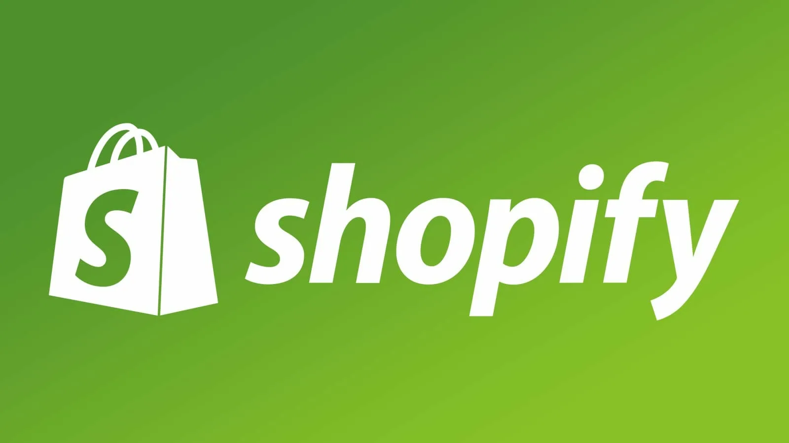

Shopify
Описание
Shopify — это облачная e-commerce-платформа, которая берёт на себя хостинг, безопасность, обновления и инфраструктуру. Вы не управляете серверами и не думаете о патчах — Shopify делает всё за вас. Магазин можно запустить за 1–2 часа. App Store содержит более 8000 приложений для маркетинга, аналитики, доставки и автоматизации.
Для кого подходит
Shopify оптимально подходит предпринимателям и командам, которым важен быстрый запуск интернет‑магазина без глубокой технической настройки: платформа станет хорошим выбором для малого и среднего бизнеса, стартапов, а также для владельцев брендов, ориентированных на прямые продажи и масштабирование через маркетплейсы. Решение особенно удобно для маркетологов и менеджеров, которым нужно оперативно тестировать гипотезы и запускать рекламные кампании, — благодаря встроенным инструментам аналитики, платёжным решениям и интеграции с социальными сетями. Для B2B‑компаний с 2024 года расширены возможности в тарифе Shopify Plus: поддержка корпоративных аккаунтов, индивидуальных цен и B2B‑каталогов делает платформу подходящей и для работы с оптовыми клиентами. Кроме того, AI‑инструменты Shopify Magic и AI Store Builder будут полезны тем, кто хочет автоматизировать рутину — генерацию описаний товаров, копирайтинг и оформление витрин — и быстрее выводить продукты на рынок.
Преимущества
Shopify сочетает в себе простоту и надёжность: встроенный drag-and-drop редактор тем позволяет создавать магазин без навыков программирования, а безопасность реализована по умолчанию — все магазины соответствуют стандарту PCI DSS Level 1 и используют 256‑битное SSL‑шифрование на каждой странице. Платформа отличается высокой скоростью работы благодаря оптимизированной инфраструктуре, которая обеспечивает стабильно высокие показатели в Google Lighthouse уже «из коробки». С 2024 года расширены возможности для B2B‑сегмента в Shopify Plus: доступны B2B‑каталоги, корпоративные аккаунты и настройка индивидуальных цен. Кроме того, в экосистеме представлены AI‑инструменты — Shopify Magic и AI Store Builder, которые помогают автоматизировать создание описаний товаров, разрабатывать дизайн и готовить маркетинговые тексты
